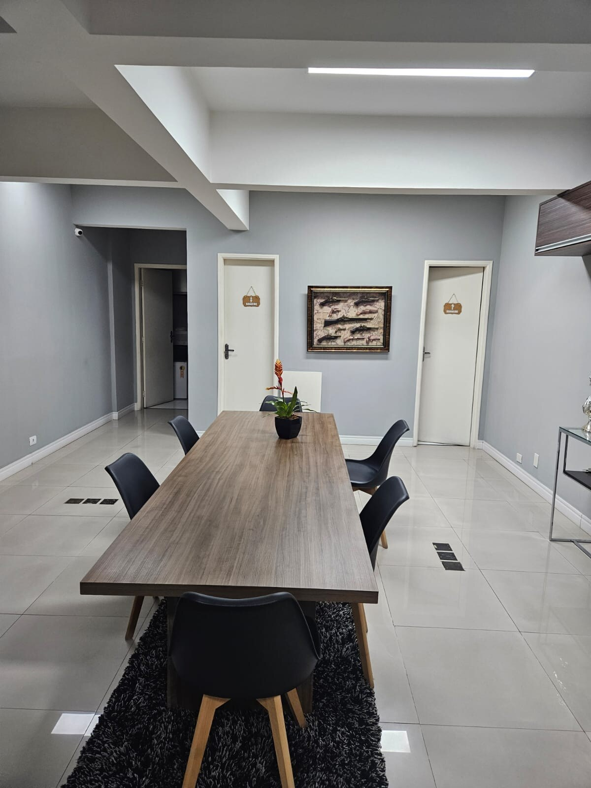
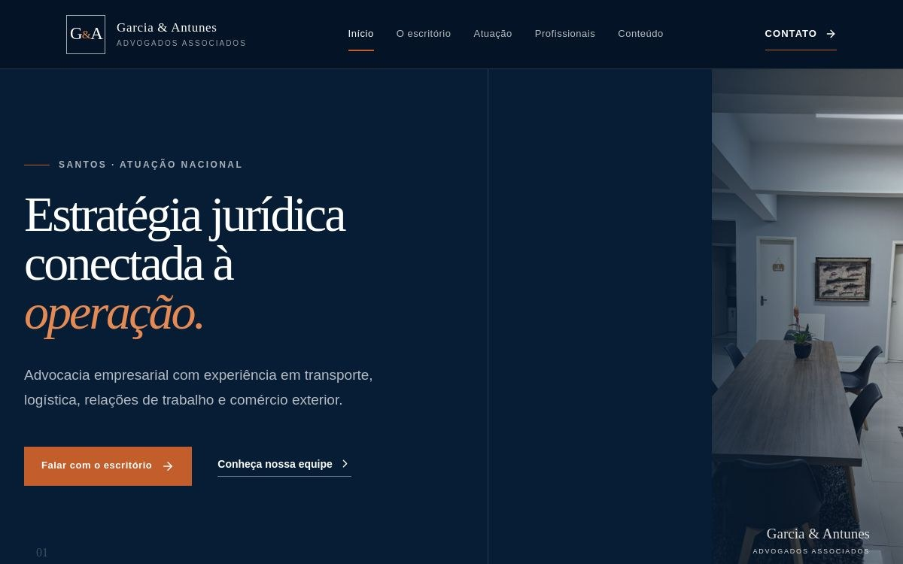
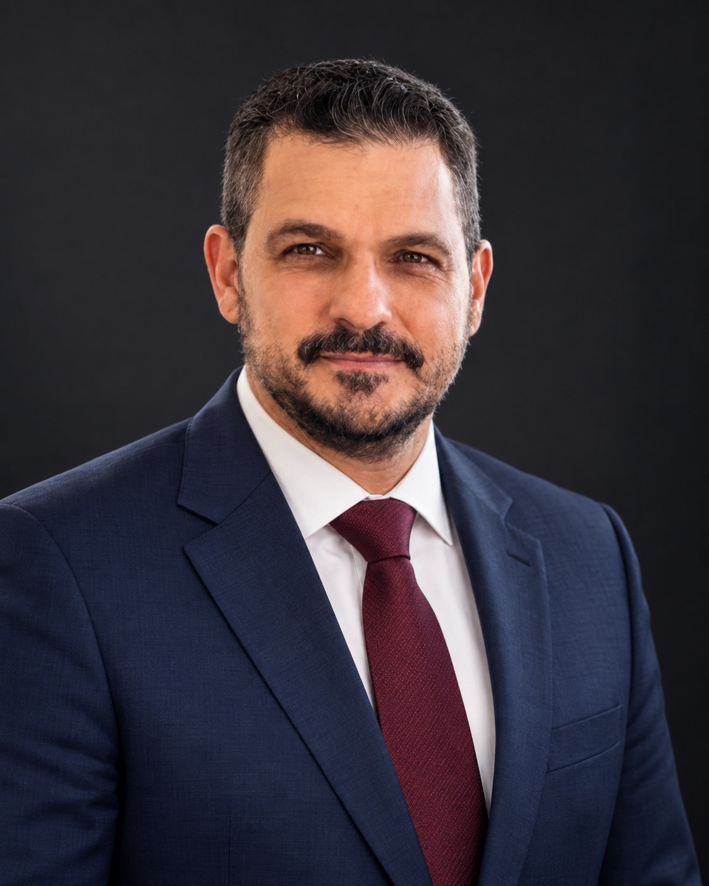

01
Trabalhista
Defesa de empresas e representação de trabalhadores, do início ao fim da execução.
Detalhamento em breveSantos e Baixada Santista, desde 2000
MarítimoAduaneiroEmpresarialTrabalhista
O Garcia & Antunes atua há mais de 20 anos em Santos e na Baixada Santista, em direito marítimo, aduaneiro, empresarial e trabalhista.

Rua General Câmara, 141, sala 73, Centro, Santos/SP · (13) 3224-3357 · (13) 98827-5959 · OAB/SP 14.743
Áreas de atuação
O modelo completo de apresentação de cada área está aplicado abaixo, em Transporte rodoviário de cargas.
01
Defesa de empresas e representação de trabalhadores, do início ao fim da execução.
Detalhamento em breve02
Jornada do motorista, frete, bloqueio em gerenciadora de risco e responsabilidade sobre a carga.
Ver detalhamento ↓03
Importação e exportação, carga retida, perdimento, avarias e demurrage.
Detalhamento em breve04
Contratos, responsabilidade civil, cobrança e execução, inclusive acidentes de trânsito.
Detalhamento em breve05
Constituição e reorganização societária, contratos e contencioso entre empresas.
Detalhamento em breve06
Defesa em inquérito e em ação penal, acompanhamento de execução e medidas urgentes.
Detalhamento em breveÁrea de atuação em detalhe
A frente em que o escritório mais se especializou, do motorista à transportadora.
O transporte rodoviário reúne num mesmo caso questões trabalhistas, civis e administrativas. O escritório atende transportadoras e embarcadores, na defesa e na estruturação de contratos, e motoristas, quando o problema é bloqueio cadastral ou cobrança indevida do frete.
Este é o modelo de apresentação das seis áreas. As demais recebem o mesmo tratamento assim que os textos e os responsáveis forem definidos.

O escritório
O Garcia & Antunes nasceu em Santos no ano 2000. A sociedade se ampliou em 2013 e novamente em 2022. Hoje são dez advogados, seis áreas e uma sede, com um responsável designado para cada processo.
O cliente fala com quem conduz o caso.
Forma de trabalho
01
O cliente sabe com quem falar durante a condução do caso.
02
O escritório analisa a situação e apresenta os caminhos possíveis.
03
Escopo, honorários e responsabilidades ficam registrados por escrito.
Profissionais
Três sócios e sete advogados. Cada processo tem um responsável designado.

Sócio fundador · OAB/SP 175.343
Cível · Marítimo e aduaneiro · Empresarial
Sócio desde 2013 · OAB/SP 237.484
Cível · Marítimo e aduaneiro · Empresarial
Sócio desde 2022 · OAB/SP 345.882
Trabalhista · Transporte rodoviário de cargas
2ª etapa As fotografias e as biografias completas dos advogados entram depois da padronização dos retratos.
Portal de conteúdo
O escritório avalia e retorna dizendo se é matéria nossa, quais são os caminhos possíveis e as condições de atuação.